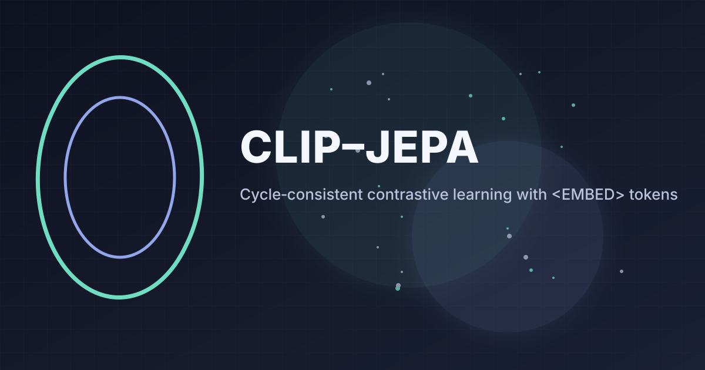
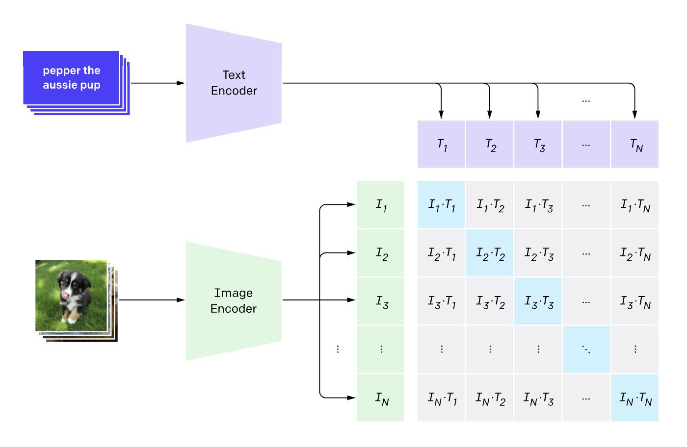
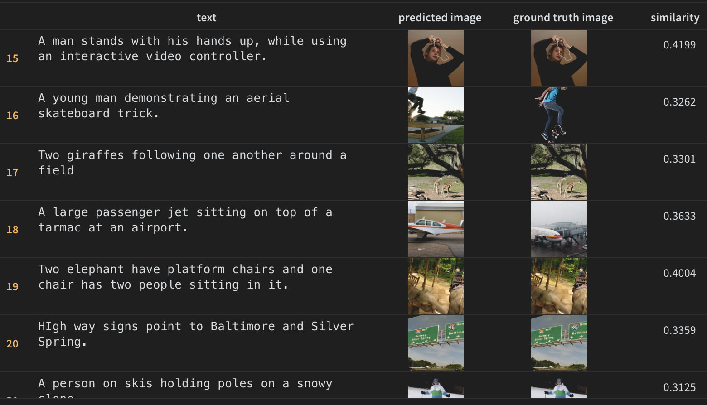

CLIP - JEPA: Converting LLMs to extract Embeddings

TL;DR
- Built a CLIP-style dual encoder that adopts JEPA’s “predict-in-embedding-space” idea: a QLoRA-tuned Qwen3 text encoder + a MobileNetV4 vision encoder. A pair of special tokens,
<EMBED>and</EMBED>, is used to extract a single text vector. - Trained and evaluated on COCO captions from Hugging Face.
- Used CyCLIP and SigLIP losses; most experiments relied on CyCLIP and a CySigLIP hybrid.
Introduction
Most CLIP-style systems use encoder-type text models that are built to produce a single sequence embedding (e.g., via a [CLS] token or mean pooling). In contrast, this work intentionally uses a causal LLM—Qwen3 (QLoRA-tuned)—as the text tower. A causal LLM is optimized for next-token prediction, not pooled sequence representations, so it doesn’t natively hand you a single “caption vector.”
To bridge that mismatch, I take a JEPA view—learn to predict in a shared embedding space—and introduce a lightweight interface that coerces a causal model into producing one vector per caption: wrap the text with special markers <EMBED> ... </EMBED> and read the final hidden state at </EMBED> as the caption embedding. Paired with a MobileNetV4 vision encoder and simple projection heads, the two towers are trained on COCO to land images and captions in the same metric space, using CyCLIP/SigLIP-style objectives. The rest of the post unpacks the token trick, projection design, loss choices, and training setup.
CLIP Recap
Before diving into the JEPA approach, let’s briefly recap CLIP (Contrastive Language-Image Pretraining). CLIP uses separate encoders for images and text, training them to produce embeddings that are close in vector space for matching image-text pairs. The image below illustrates the CLIP architecture:

In the above image, imagine having multiple image-caption pairs. The image of the puppy gets encoded into a vector (via the vision encoder), and the caption “Pepper, the aussie pup” gets encoded into another vector (via the text encoder). Similar embeddings are created for the other image-caption pairs. The training objective is to maximize the similarity between matching pairs while minimizing it for non-matching pairs. > Note: The embeddings are typically normalized to unit length.
The loss that was used in the original CLIP paper is the cross-entropy loss over a row (and column) of the similarity matrix between all image and text embeddings in a batch. The label for each image is the index of its matching caption, and vice versa. In this case the label is just the diagonal of the similarity matrix. We do both image-to-text and text-to-image losses and hence the cross-entropy loss is computed for both columns and rows of the similarity matrix.
Model: CLIP-JEPA
In my earlier CLIP write-up I paired a CNN with an encoder-style transformer. Here I switch to a MobileNetV4 vision tower and a causal LLM text tower (Qwen3-4B-Instruct-2507, QLoRA-tuned). The JEPA framing is to learn a shared embedding space and predict in that space, not in token space. Because causal LLMs don’t natively output a pooled sequence vector, I introduce two special tokens—<EMBED> and </EMBED>—and take the final hidden state at </EMBED> as the caption embedding.
Why not a single VLM? Memory. End-to-end VLM vision stacks drove batch sizes too low for stable contrastive training, so I kept separate towers with lightweight projection heads.
- Vision encoder: MobileNetV4 (from
timm) - Text encoder: Qwen3-4B-Instruct-2507 (QLoRA)
- Token trick: wrap text with
<EMBED> ... </EMBED>and readh_lastat</EMBED>
Projection heads
Both towers feed linear projection heads that map into a common, ℓ2-normalized space. Base encoders are fine-tuned; heads train from scratch. With timm, it is possible to drop the classification head via:
base: nn.Module = timm.create_model(config.vision_model, num_classes=0, pretrained=True)I add a small residual MLP with normalization and dropout:
class Projection(nn.Module):
def __init__(self, d_in: int, d_out: int, p: float = 0.5) -> None:
super().__init__()
self.linear1 = nn.Linear(d_in, d_out, bias=False)
self.linear2 = nn.Linear(d_out, d_out, bias=False)
self.layer_norm = nn.BatchNorm1d(d_out)
self.drop = nn.Dropout(p)
def forward(self, x: torch.Tensor) -> torch.Tensor:
embed1 = self.linear1(x)
embed2 = self.drop(self.linear2(F.silu(embed1)))
embeds = self.layer_norm(embed1 + embed2)
return embeds
class ProjectionLayers(nn.Module):
def __init__(self, d_in: int, d_out: int, num_layers: int) -> None:
super().__init__()
layers: list[nn.Module] = []
for _ in range(num_layers - 1):
layers.extend([Projection(d_in, d_in), nn.SiLU()])
layers += [Projection(d_in, d_out)]
self.projection = nn.Sequential(*layers)
def forward(self, x: torch.Tensor) -> torch.Tensor:
return F.normalize(self.projection(x), dim=-1)Text Embedding with a causal LLM: The
Given that LLMs are designed for generation, we need a way to extract a single embedding vector from the sequence of hidden states. One way to do this is to average out the hidden states across all tokens, but this can blur the signal. Instead, I prepend <EMBED> and append </EMBED> to the text and extract the hidden state at the closing token. The inital <EMBED> token serves as a marker to indicate that we are about to embed this sequence, as opposed to asking a question as we would normally do with a LLM.
The closing </EMBED> token indicates where to extract the embedding from. The aim is that the LLM learns to summarize the entire input text into the hidden state at this position.
In order to get the hidden state at the </EMBED> token, we do the following:
out = llm_model(**inputs, output_hidden_states=True)
h_last: torch.Tensor = out.hidden_states[-1] # [B, T+2, H]
last_idx = inputs["input_ids"] == model_components.embed_end_token_id
return h_last[last_idx] # [B, H]The reason we do out.hidden_states[-1] is because without it, out.hidden_states contains the hidden states from all layers, and we only want the last layer. From there, we cannot simply do h_last[:, -1, :] since the position of the </EMBED> token may vary depending on the length of the input text. Therefore, we create a mask last_idx to identify the positions of the </EMBED> tokens in the batch and extract the corresponding hidden states.
In order to learn these special token embeddings, there are two options: 1. Fine-tune the entire input embedding table, and zero out the gradients for all other tokens, which can be memory-intensive. This requires a gradient hook on the embedding weights. 2. Keep the input embedding table frozen, and add a small delta to the output embeddings only for these special tokens using a forward hook.
class DeltaOnEmbedding(nn.Module):
"""
Adds a (2, H) delta to the *output* of the input embedding only where
input_ids == start_id or end_id. Keeps the base embedding frozen & intact.
"""
def __init__(self, start_id: int, end_id: int, hidden_size: int, init_std: float = 0.02, dtype=None, device=None):
super().__init__()
self.start_id = int(start_id)
self.end_id = int(end_id)
self.delta = nn.Parameter(torch.zeros(2, hidden_size, dtype=dtype, device=device)) # 2 x hidden_size
nn.init.normal_(self.delta, mean=0.0, std=init_std)
def hook(self, embed_module: nn.Embedding, inputs: tuple[torch.Tensor, ...], output: torch.Tensor) -> torch.Tensor:
input_ids = inputs[0]
emb = output # batch_size x time_seq x hidden_size
mask_start = (input_ids == self.start_id).unsqueeze(-1) # batch_size x time_seq x 1
mask_end = (input_ids == self.end_id).unsqueeze(-1) # batch_size x time_seq x 1
emb = emb + mask_start.to(emb.dtype) * self.delta[0] + mask_end.to(emb.dtype) * self.delta[1] # batch_size x time_seq x hidden_size
return embNote: PyTorch module forward hooks receive (module, inputs, output) and may return a new output (which replaces the original)—perfect for small, surgical edits like this. 
Losses
In this experiment, I used three loss functions for training the CLIP-JEPA model. 1. Firstly, instead of the standard CLIP cross-entropy loss, I used SigLIP, which replaces the softmax with sigmoid/BCE on pairwise similarities. Given, that there were N²−N negatives per batch, I had to weight the positives by (N−1) to balance the signal. A learnt temperature parameter was used to scale the similarities. 2. Secondly, as part of CyCLIP, I added asymmetry loss S - Sᵀ. This penalizes the difference between image-to-text and text-to-image similarities, encouraging cycle-consistency. 3. Thirdly, I added in-modal similarity alignment losses: IIᵀ - TTᵀ. This encourages the similarity structure within each modality to be aligned.
With the first loss, I however do wonder if it would have been better to use the standard softmax based Cross-Entropy loss since the similarties of the top 1 images did not go above 0.4. In the original SigLIP paper, the authors only processed a limited number of negatives per batch, which may have allowed the similarities to be higher.
Training and Results
I used the jxie/coco_captions dataset from Hugging Face, which contains COCO image-caption pairs. This contained roughly 100k images with 5 captions each. The text captions were wrapped in a chat format expected by Qwen3, with the special <EMBED>,</EMBED> tokens added.
The model was trained using the AdamW optimizer with a learning rate of 1e-3 and a batch size of 64. The training process took approximately 2 hours on a single L40 GPU. Note that we LORA trained the model therefore only training ~1% of the model parameters. The vision model base was also trained, however had a learning rate 10x smaller. We also added a OneCycle learning rate to schedule the learning rate to achieve optimal results.
The results are shown below. Note how even in the cases of where the model got it wrong, how close it was to the true image. For instance in the skateboard example, the model retrieved another skateboard image which is quite similar. In the case of the airplane example, the model retrieved a small plane instead of a large commercial airplane.

However, I have seen higher similarity scores in CLIP models trained from scratch, therefore I believe there is room for improvement here. Some ideas to try: - Use the standard CLIP cross-entropy loss instead of SigLIP. - Increase batch size to get more negatives (but I need a larger GPU for this). - Train for more epochs.
Appendix
Zeroing out embedding grads
I also experimented with a gradient hook on the input‐embedding table to zero out grads except on the special tokens. While this method works, it takes up more memory.
class GradMaskHook:
def __init__(self, embed_start_token_id: int, embed_end_token_id: int, embed_shape: tuple[int, int], device: torch.device):
self.embed_start_token_id = embed_start_token_id
self.embed_end_token_id = embed_end_token_id
self.mask = torch.zeros(embed_shape, dtype=torch.bool, device=device)
self.mask[embed_start_token_id] = True
self.mask[embed_end_token_id] = True
def __call__(self, grad: torch.Tensor) -> torch.Tensor:
return grad * self.mask.to(grad.dtype)
def embedding_zero_grad(lora_model: Qwen2_5_VLForConditionalGeneration, grad_hook: GradMaskHook):
embed = lora_model.get_input_embeddings()
embed.weight.requires_grad_(True)
embed.weight.register_hook(grad_hook)Quick refresher: Tensor hooks (e.g., weight.register_hook) see gradients, while module forward hooks see inputs/outputs and can replace the output. 
Training Setup and Tricks
- Train locally: I cannot stress enough how important it is to train a smaller model, for a few batches locally first to iron out all the bugs before scaling up to a larger model or cloud setup. 
- W&B logging: call wandb.init() at the very start of main so you capture all params, env, and system metrics. 
- Flash-Attention wheels: I’ve had the best luck installing a prebuilt wheel that exactly matches PyTorch, CUDA, Python, and ABI—rather than generic pip install flash_attn. You can find prebuilt wheels here.
- Datasets: prefer local caches with HF’s download_mode=REUSE_DATASET_IF_EXISTS to avoid repeated checks.
- Chat templates: Qwen uses a distinct chat template—my pipeline formats messages and appends to select the hidden state. The repo docs call out this step explicitly. 
- The text data needs to be wrapped in the chat format expected by Qwen. Here’s how I formatted the captions:
messages = [
[
{"role": "system", "content": "You summarize text."},
{"role": "user", "content": text}
]
for text in texts
]- MacOS dataloaders still dislike high worker counts (I keep
num_workers = 0).